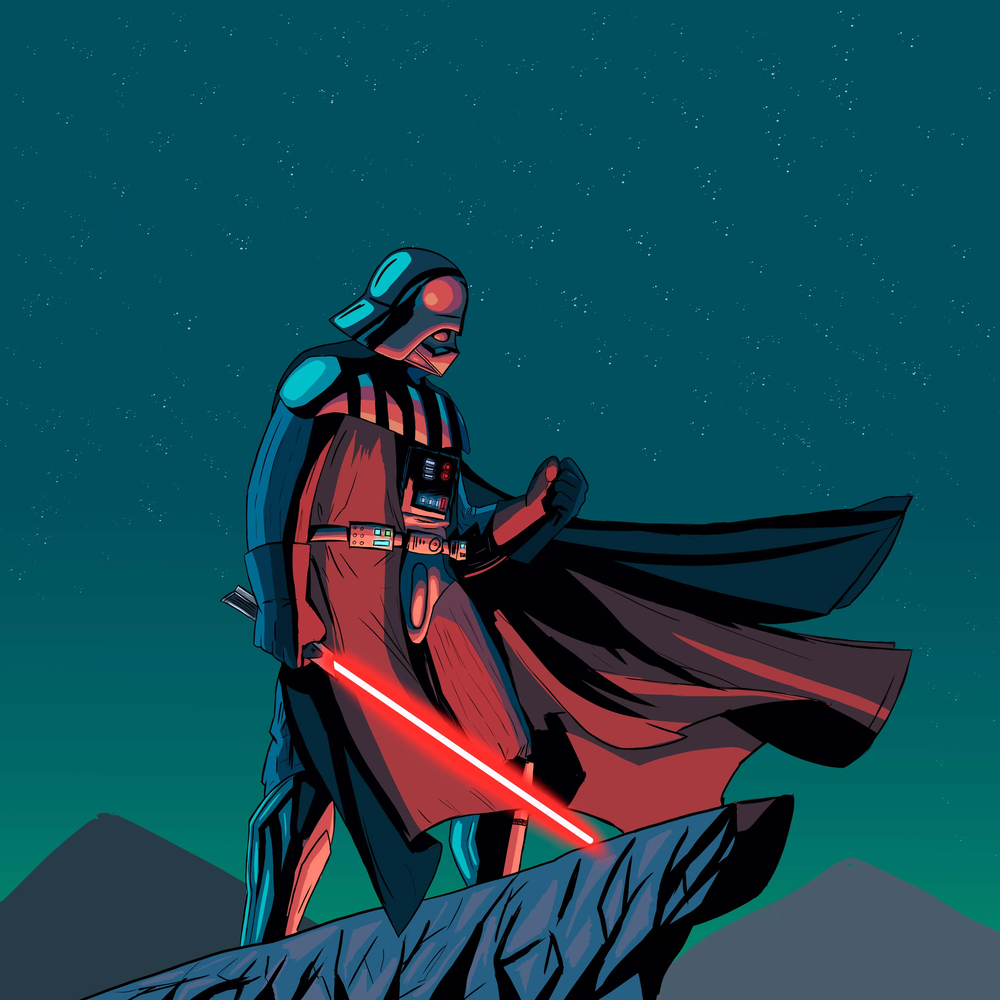

Mi Galeria

Mi estilo de dibujo digital está profundamente inspirado en mis primeras experiencias dibujando en papel. Siempre me ha fascinado el efecto único que genera la tinta en una pluma fuente, y he llevado ese mismo enfoque a mis creaciones digitales. A través de trazos fluidos y texturas similares, busco replicar esa sensación orgánica y auténtica que aporta la tinta al papel, manteniendo la esencia de mis raíces tradicionales en el mundo digital.
El objetivo de mi arte digital es demostrar que es posible crear obras interesantes utilizando herramientas simples. Creo firmemente que la creatividad y la técnica son lo más importante, y que no se necesitan herramientas complejas para obtener excelentes resultados. Mi enfoque se centra en sacar el máximo provecho de lo básico, mostrando que con dedicación y visión, cualquier herramienta puede ser una vía para expresar arte.